WoW Forever vs Classic talents
How the Forever talent trees differ from the Classic (1.12) trees for all 9 classes: brand-new talents, talents that moved or changed their ranks, and Classic talents that are gone.
Warrior
13 new · 14 changed · 12 gone
New in Forever 13
- Improved Tactical MasteryArms · row 2 · 3 ranks
You keep 15 extra Rage when you change stances.
- Spearing StrikeArms · row 4 · 1 rank
Battle Stance attack for 75% weapon damage, plus 75% more against Giants, Dragonkin and mounted targets (it also dismounts them). 15 Rage, instant, 20 sec cooldown.
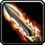
BloodthrillArms · row 5 · 2 ranksMain-hand hits on targets with your Rend have a 20% chance to enable Overpower.
- WeaponmasterArms · row 5 · 5 ranks
Bonus by weapon type, up to: Axe/Polearm +5% crit chance, Mace/Staff ignore 15% of target armor, Sword 5% chance for an extra attack.
 Lingering RageFury · row 2 · 5 ranks
Lingering RageFury · row 2 · 5 ranksAfter combat your Rage starts to decay 10 sec later.
 Furious PrecisionFury · row 3 · 3 ranks
Furious PrecisionFury · row 3 · 3 ranks+10% hit chance with off-hand attacks.
 Reckless SwingsFury · row 4 · 1 rank
Reckless SwingsFury · row 4 · 1 rankCosts 25% of your base health: your next 4 melee attacks within 8 sec generate 5 extra Rage each. 15 sec cooldown.
- Gore DrinkerFury · row 5 · 2 ranks
After Enrage, Berserker Rage, Bloodrage, Death Wish, Bloodthirst or Reckless Swings, your next 3 melee attacks each restore 1% of your max health. The healing causes no threat.
- Improved WhirlwindFury · row 6 · 2 ranks
Whirlwind's cooldown is 2 sec shorter, and it deals 30% more damage to the closest enemy.
 Master of DefenseProtection · row 3 · 2 ranks
Master of DefenseProtection · row 3 · 2 ranksA 100% chance to gain 5 Rage when you dodge or parry with a shield equipped.
 VanguardProtection · row 4 · 1 rank
VanguardProtection · row 4 · 1 rankCharge can be used in Defensive Stance.
- Focused RageProtection · row 5 · 3 ranks
Offensive abilities cost 3 less Rage.
- BastionProtection · row 6 · 5 ranks
10% more damage of all kinds while a shield is equipped.
Changed place or ranks 14
- Improved OverpowerArms
row 3 → 2 (earlier: level 15+)
- Two-Handed Weapon SpecializationArms
5 → 3 ranks
- Improved SlamArms
moved from Fury to Arms · 5 → 2 ranks · row 5 → 6 (later: level 35+)
 EnrageFury
EnrageFuryrow 4 → 3 (earlier: level 20+)
- Improved Berserker RageFury
row 6 → 5 (earlier: level 30+)
 FlurryFury
FlurryFury5 → 3 ranks
- Improved BloodrageProtection
row 2 → 1 (earlier: level 10+)
- Iron WillProtection
row 2 → 1 (earlier: level 10+)
 AnticipationProtection
AnticipationProtectionrow 1 → 2 (later: level 15+)
 Improved RevengeProtection
Improved RevengeProtectionrow 3 → 2 (earlier: level 15+)
- Improved Thunder ClapProtection
moved from Arms to Protection
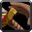
Improved DisarmProtectionrow 4 → 3 (earlier: level 20+)
 DefianceProtection
DefianceProtection5 → 3 ranks
- Improved Shield BashProtection
row 5 → 4 (earlier: level 25+)
Classic talents not in Forever 12
- Tactical Mastery Arms
- Axe Specialization Arms
- Mace Specialization Arms
- Sword Specialization Arms
- Polearm Specialization Arms
- Improved Demoralizing Shout Fury
- Improved Cleave Fury
- Improved Battle Shout Fury
- Toughness Protection
- Improved Shield Block Protection
- Improved Taunt Protection
- One-Handed Weapon Specialization Protection
Paladin
21 new · 18 changed · 14 gone
New in Forever 21
- ReverenceHoly · row 2 · 2 ranks
30% of your mana regeneration continues while casting.
 Improved SealsHoly · row 2 · 5 ranks
Improved SealsHoly · row 2 · 5 ranksYour Seals and Judgements deal 15% more damage.
 Purifying PowerHoly · row 2 · 2 ranks
Purifying PowerHoly · row 2 · 2 ranksCleanse and Purify cost 20% less mana, and Exorcism and Holy Wrath cooldowns are 33% shorter.
 Holy ConduitHoly · row 3 · 2 ranks
Holy ConduitHoly · row 3 · 2 ranksConsecration, Holy Wrath, Exorcism and Hammer of Wrath cost 40% less mana.
- Divine PrecisionHoly · row 4 · 2 ranks
8% hit chance with Holy Shock, Exorcism, Consecration, Holy Wrath, Holy Strike, Hammer of Justice, Repentance, Turn Evil and Light's Vigil (not Judgements, Seal of Command or Hammer of Wrath), and silences on you are 20% shorter.
- Infusion of LightHoly · row 4 · 2 ranks
Holy Shock and Flash of Light crits cut your next Holy Light's cast time by 1 sec.
- Oath of LightHoly · row 4 · 1 rank
Swear an Oath on one ally for 5 min: your Holy Light heals them for 400 more, Flash of Light for 115 more and Holy Shock for 230 more. One Oath at a time; 8% of base mana, 40 yd, instant.
 Consecrated GroundHoly · row 5 · 2 ranks
Consecrated GroundHoly · row 5 · 2 ranksYour Holy spells deal 10% more damage to the first 4 enemies that enter your Consecration.
 Boundless LightHoly · row 5 · 2 ranks
Boundless LightHoly · row 5 · 2 ranks30% more critical strike chance for Holy Shock on allies that don't have your Oath.
 Light's VigilHoly · row 7 · 1 rank
Light's VigilHoly · row 7 · 1 rankGrants Vigil to a friendly target for 30 sec (40 yd): your next Holy Shock on that ally skips the cooldown and heals them and their party.
- Sacred DutyProtection · row 2 · 2 ranks
Divine Shield, Divine Protection and Templar's Bulwark cooldowns are 60 sec shorter, and Forbearance is 10 sec shorter.
 Templar's BulwarkProtection · row 3 · 1 rank
Templar's BulwarkProtection · row 3 · 1 rankAn absorb shield equal to 100% of your max health for 8 sec. It is a Magic effect and can be dispelled. Applies Forbearance for 1 min. 5 min cooldown.
 Swift JudgementProtection · row 4 · 1 rank
Swift JudgementProtection · row 4 · 1 rankUnleashes your Seal's Judgement without using up the Seal, on its own cooldown.
- StoicismProtection · row 5 · 2 ranks
Stun and Charm effects on you are 20% shorter.
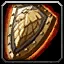
Iron CreedProtection · row 6 · 3 ranks30% more Holy Strike threat and 6% less damage taken.
- ShieldswornProtection · row 7 · 1 rank
Holy Strike's cooldown is 4 sec shorter and it hits with your shield, triggering Holy Shield and Shield Specialization without using their charges. Also blocks spells for 6 sec.
- Sanctified JudgementRetribution · row 2 · 3 ranks
Your Judgements have a 100% chance to return 60% of the judged Seal's mana cost, without generating threat.
 Sacred ArbiterRetribution · row 4 · 1 rank
Sacred ArbiterRetribution · row 4 · 1 rankHoly Strike deals 20% more damage and refreshes all Judgement effects on the target.
- Turn EvilRetribution · row 5 · 2 ranks
Turn Undead casts 1 sec faster with 10 sec less cooldown, and also works on Demons.
 Champion of the LightRetribution · row 6 · 5 ranks
Champion of the LightRetribution · row 6 · 5 ranksGain spell damage equal to 60% of your Intellect, and Hammer of Wrath casts 1 sec faster.
- Unsealed WrathRetribution · row 7 · 1 rank
Melee attacks store your active Seal for 15 sec, up to 3 times. Attacking with a different Seal spends the stored stacks.
Changed place or ranks 18
 Spiritual FocusHoly
Spiritual FocusHolyrow 2 → 1 (earlier: level 10+)
- Healing LightHoly
row 3 → 2 (earlier: level 15+)
 Divine FavorHoly
Divine FavorHolyrow 5 → 3 (earlier: level 20+)
- IlluminationHoly
row 4 → 3 (earlier: level 20+)
 Holy ShockHoly
Holy ShockHolyrow 7 → 5 (earlier: level 30+)
- Divine IntellectProtection
moved from Holy to Protection
- Improved Hammer of JusticeProtection
row 4 → 3 (earlier: level 20+)
 Shield SpecializationProtection
Shield SpecializationProtection3 → 2 ranks
- ToughnessProtection
row 2 → 3 (later: level 20+)
 Improved Righteous FuryProtection
Improved Righteous FuryProtectionrow 3 → 4 (later: level 25+)
 AnticipationProtection
AnticipationProtectionrow 3 → 4 (later: level 25+)
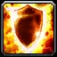
Holy ShieldProtectionrow 7 → 5 (earlier: level 30+)
- DeflectionRetribution
row 2 → 1 (earlier: level 10+)
 ConvictionRetribution
ConvictionRetribution5 → 3 ranks · row 3 → 2 (earlier: level 15+)
- Unyielding FaithRetribution
moved from Holy to Retribution
 Two-Handed Weapon SpecializationRetribution
Two-Handed Weapon SpecializationRetributionrow 5 → 4 (earlier: level 25+)
 RepentanceRetribution
RepentanceRetributionrow 7 → 5 (earlier: level 30+)
 VengeanceRetribution
VengeanceRetribution5 → 3 ranks · row 6 → 5 (earlier: level 30+)
Classic talents not in Forever 14
- Improved Seal of Righteousness Holy
- Consecration Holy
- Improved Lay on Hands Holy
- Improved Blessing of Wisdom Holy
- Lasting Judgement Holy
- Improved Devotion Aura Protection
- Blessing of Kings Protection
- Improved Concentration Aura Protection
- Blessing of Sanctuary Protection
- One-Handed Weapon Specialization Protection
- Improved Blessing of Might Retribution
- Improved Seal of the Crusader Retribution
- Improved Retribution Aura Retribution
- Sanctity Aura Retribution
Hunter
18 new · 8 changed · 14 gone
New in Forever 18
 Deadly AspectsBeast Mastery · row 1 · 5 ranks
Deadly AspectsBeast Mastery · row 1 · 5 ranksWith Aspect of the Hawk, Auto Shot has a 10% chance to give +30% ranged attack speed for 12 sec; with Aspect of the Beast, melee auto attacks get the same for melee speed.
 Focused FireBeast Mastery · row 2 · 2 ranks
Focused FireBeast Mastery · row 2 · 2 ranksWhile your pet is out, you and your pet deal 2% more damage.
- Summon HawkBeast Mastery · row 4 · 1 rank
A hawk dive-bombs your target for 32 Physical damage plus 5% of your ranged attack power, then fights beside you for 18 sec; up to 2 hawks at once. 11% of base mana. Shares a cooldown with Arcane Shot.
 Lethal AttacksMarksmanship · row 1 · 5 ranks
Lethal AttacksMarksmanship · row 1 · 5 ranks+5% critical strike chance with all attacks.
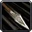
Improved StingsMarksmanship · row 2 · 3 ranksSerpent Sting deals 20% more damage, Viper Sting's cooldown is 6 sec shorter and Scorpid Sting lasts 45 sec longer.
 Careful AimMarksmanship · row 2 · 5 ranks
Careful AimMarksmanship · row 2 · 5 ranksGain Attack Power equal to 100% of your Intellect.
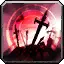
Rapid KillingMarksmanship · row 3 · 2 ranksRapid Fire's cooldown is 2 min shorter. Killing an enemy (or having it die with your Serpent Sting on it) makes your next Shot within 20 sec deal 20% more damage.
 Lone WolfMarksmanship · row 3 · 1 rank
Lone WolfMarksmanship · row 3 · 1 rankWith no pet out, all your attacks deal 20% more damage.
 Rapid RecuperationMarksmanship · row 5 · 2 ranks
Rapid RecuperationMarksmanship · row 5 · 2 ranksSerpent Sting lets 50% of your mana regeneration continue while casting for 15 sec, or 100% when you use a Rapid Killing proc.
 Sniper ShotMarksmanship · row 7 · 1 rank
Sniper ShotMarksmanship · row 7 · 1 rank4 sec cast: ranged weapon damage plus 320, and your next 3 Shots within 10 sec get +10 yd range. 8–45 yd, 15 sec cooldown.
- Improved TrackingSurvival · row 1 · 5 ranks
5% more damage against the creature type you are tracking (Beasts, Demons, Dragonkin, Elementals, Giants, Humanoids or Undead).
 Survival TacticsSurvival · row 4 · 2 ranks
Survival TacticsSurvival · row 4 · 2 ranksTraps and Feign Death are 10% less likely to be resisted.
 Predator's EdgeSurvival · row 4 · 5 ranks
Predator's EdgeSurvival · row 4 · 5 ranksMelee ability crits deal 30% more bonus damage, and your off-hand weapon deals 50% more damage.
 ResourcefulnessSurvival · row 5 · 2 ranks
ResourcefulnessSurvival · row 5 · 2 ranksTraps and melee abilities cost 60% less mana. Melee and ranged crits have a 100% chance to let 50% of your mana regeneration continue while casting for 30 sec.
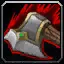
Expose PreySurvival · row 5 · 2 ranksMelee and ranged hits on a target with your Hunter's Mark have a 10% chance to enable Mongoose Bite for 10 sec.
 Survivalist's DisciplineSurvival · row 5 · 2 ranks
Survivalist's DisciplineSurvival · row 5 · 2 ranksTraps and Deterrence have 40% shorter cooldowns.
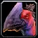
Strider KickSurvival · row 5 · 1 rankA melee strike for 100% weapon damage that gives you +30% movement speed for 3 sec. 8 sec cooldown.
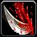
Lacerating StrikesSurvival · row 7 · 1 rankMongoose Bite also makes the target bleed for 40% of its damage over 21 sec. Your newest bleed always overwrites your earlier one.
Changed place or ranks 8
- Improved Aspect of the MonkeyBeast Mastery
5 → 3 ranks
- Hawk EyeMarksmanship
row 3 → 1 (earlier: level 10+)
- EfficiencyMarksmanship
row 1 → 2 (later: level 15+)
 Trueshot AuraMarksmanship
Trueshot AuraMarksmanshiprow 7 → 4 (earlier: level 25+)
- SurvivalistSurvival
row 3 → 2 (earlier: level 15+)
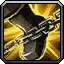
Improved Wing ClipSurvival5 → 3 ranks
- SurefootedSurvival
row 4 → 3 (earlier: level 20+)
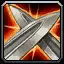
CounterattackSurvivalrow 5 → 4 (earlier: level 25+)
Classic talents not in Forever 14
- Improved Aspect of the Hawk Beast Mastery
- Improved Eyes of the Beast Beast Mastery
- Thick Hide Beast Mastery
- Improved Hunter's Mark Marksmanship
- Lethal Shots Marksmanship
- Aimed Shot Marksmanship
- Improved Serpent Sting Marksmanship
- Improved Scorpid Sting Marksmanship
- Monster Slaying Survival
- Humanoid Slaying Survival
- Trap Mastery Survival
- Improved Feign Death Survival
- Killer Instinct Survival
- Wyvern Sting Survival
Rogue
14 new · 23 changed · 11 gone
New in Forever 14
 Blood SplatterAssassination · row 3 · 1 rank
Blood SplatterAssassination · row 3 · 1 rankRupture lasts 6 sec longer and Garrote lasts 9 sec longer.
 VenomAssassination · row 5 · 1 rank
VenomAssassination · row 5 · 1 rankPassive: Shank makes your poisons deal 30% more damage and apply 20% more often for 6 sec.
 MutilateAssassination · row 7 · 1 rank
MutilateAssassination · row 7 · 1 rankDagger attack with both weapons for 90% weapon damage plus 40 per weapon, and 20% more damage to poisoned targets. Adds 2 combo points. 60 Energy.
- Coup de GraceCombat · row 1 · 3 ranks
Eviscerate deals 20% more damage, and Death Mark deals 20% more and stores damage 20% faster.
 Efficient StrikesCombat · row 1 · 2 ranks
Efficient StrikesCombat · row 1 · 2 ranksSinister Strike and Hemorrhage cost 5 less Energy.
 Puncturing WoundsCombat · row 2 · 3 ranks
Puncturing WoundsCombat · row 2 · 3 ranksBackstab +30% crit chance, Mutilate +15%, and Backstab has a 45% chance to add an extra combo point.
 ComposureCombat · row 3 · 2 ranks
ComposureCombat · row 3 · 2 ranksPoised lowers the cost of your next Energy ability by 10 more. Poised is the level-18 Rogue ability: out of combat at full Energy, your next Energy ability costs 10 less.
 Flawless ExecutionCombat · row 4 · 1 rank
Flawless ExecutionCombat · row 4 · 1 rankEviscerate costs 15 less Energy.
 Hack and SlashCombat · row 5 · 5 ranks
Hack and SlashCombat · row 5 · 5 ranksBonus by weapon type, up to: Axe/Sword 5% chance for an extra attack, Dagger/Fist +5% crit, Mace ignores 15% armor.
 Flash of SteelCombat · row 6 · 5 ranks
Flash of SteelCombat · row 6 · 5 ranksShank gives 15 extra Energy and its cooldown is 2 sec shorter. Shank is the level-24 Rogue ability: an off-hand strike for 50% weapon damage that can't miss, 5 Energy, gives back 15 Energy, 10 sec cooldown.
 Dirty TricksSubtlety · row 2 · 2 ranks
Dirty TricksSubtlety · row 2 · 2 ranksSap and Blind cost 50% less Energy.
 Quick GetawaySubtlety · row 4 · 2 ranks
Quick GetawaySubtlety · row 4 · 2 ranksSap can hold one more target, and after you Sap something you move 30% faster for 3 sec.
- Boot KnifeSubtlety · row 6 · 5 ranks
Shank has a 100% chance to add 2 combo points to the target.
- Death MarkSubtlety · row 7 · 1 rank
Curse finisher for 25 Energy (20 yd, 10 sec cooldown): for 6 sec it stores 12% of the damage you deal per combo point (60% at 5; Garrote and Rupture store at double rate), then deals the stored damage. At 5 combo points the cap is 573 plus 20% of your Attack Power, raised by your crit chance.
Changed place or ranks 23
 Improved GougeAssassination
Improved GougeAssassinationmoved from Combat to Assassination
 Improved Expose ArmorAssassination
Improved Expose ArmorAssassinationrow 3 → 2 (earlier: level 15+)
- VigorAssassination
1 → 2 ranks · row 7 → 3 (earlier: level 20+)
- LethalityAssassination
5 → 2 ranks
 Cold BloodAssassination
Cold BloodAssassinationrow 5 → 4 (earlier: level 25+)
 Relentless StrikesAssassination
Relentless StrikesAssassination1 → 5 ranks · row 3 → 5 (later: level 30+)
- Improved Kidney ShotAssassination
3 → 2 ranks
 Seal FateAssassination
Seal FateAssassination5 → 3 ranks
- DeflectionCombat
5 → 3 ranks
- PrecisionCombat
5 → 3 ranks
- Improved SprintCombat
row 3 → 2 (earlier: level 15+)
- AggressionCombat
row 6 → 4 (earlier: level 25+)
- Weapon ExpertiseCombat
row 6 → 4 (earlier: level 25+)
- Dual Wield SpecializationCombat
5 → 2 ranks · row 4 → 5 (later: level 30+)
- SetupSubtlety
row 4 → 1 (earlier: level 10+)
- Master of DeceptionSubtlety
5 → 3 ranks
- CamouflageSubtlety
5 → 3 ranks
 Dirty DeedsSubtlety
Dirty DeedsSubtletyrow 5 → 2 (earlier: level 15+)
 Improved AmbushSubtlety
Improved AmbushSubtletyrow 3 → 2 (earlier: level 15+)
 PremeditationSubtlety
PremeditationSubtletyrow 7 → 3 (earlier: level 20+)
 Serrated BladesSubtlety
Serrated BladesSubtletyrow 4 → 3 (earlier: level 20+)
 ElusivenessSubtlety
ElusivenessSubtletyrow 2 → 4 (later: level 25+)
 Ghostly StrikeSubtlety
Ghostly StrikeSubtletyrow 3 → 4 (later: level 25+)
Classic talents not in Forever 11
- Improved Eviscerate Assassination
- Murder Assassination
- Improved Sinister Strike Combat
- Improved Backstab Combat
- Dagger Specialization Combat
- Mace Specialization Combat
- Sword Specialization Combat
- Fist Weapon Specialization Combat
- Sleight of Hand Subtlety
- Improved Sap Subtlety
- Deadliness Subtlety
Priest
15 new · 11 changed · 10 gone
New in Forever 15
 Power in LightDiscipline · row 1 · 5 ranks
Power in LightDiscipline · row 1 · 5 ranksSmite and Penance deal 10% more damage to targets with your Holy Fire or Shadow Word: Pain.
- Twin DisciplinesDiscipline · row 1 · 5 ranks
Your instant spells deal 5% more damage and healing.
 Holy PrecisionDiscipline · row 2 · 3 ranks
Holy PrecisionDiscipline · row 2 · 3 ranks+18% hit chance with Holy spells.
- Soul WardingDiscipline · row 4 · 1 rank
Power Word: Shield has a 4 sec shorter cooldown and costs 15% less mana.
 PenanceDiscipline · row 5 · 1 rank
PenanceDiscipline · row 5 · 1 rank2 sec channel: 45 Holy damage to an enemy or 134 healing to an ally every second. 150 mana, 36 yd, 12 sec cooldown.
- Renewed HopeDiscipline · row 5 · 5 ranks
Flash Heal, Lesser Heal, Heal, Greater Heal and Penance get +10% crit chance on targets with Weakened Soul, and Weakened Soul is 5 sec shorter.
- Divine AegisDiscipline · row 6 · 3 ranks
Non-periodic critical heals also shield the target for 15% of the heal (max 1,200 damage) for 12 sec.
 Twilight FocusHoly · row 1 · 3 ranks
Twilight FocusHoly · row 1 · 3 ranksA 70% chance that taking damage doesn't delay your spell casts.
 Holy BindingHoly · row 4 · 1 rank
Holy BindingHoly · row 4 · 1 rankEach Flash Heal you cast on someone else heals you for 50% as much, with no threat.
 Litany of LightHoly · row 5 · 2 ranks
Litany of LightHoly · row 5 · 2 ranksA heal cast after a different heal refunds 10% of its base mana cost.
 Prayer of MendingHoly · row 7 · 1 rank
Prayer of MendingHoly · row 7 · 1 rankPuts a prayer on an ally that heals 172 the next time they take damage or a direct heal, then jumps up to 5 times to allies within 20 yd. 210 mana, 40 yd, 10 sec cooldown.
- Improved Mind FlayShadow · row 3 · 2 ranks
Each Mind Flay tick deals 20% more than the one before.
- Dark InspirationShadow · row 4 · 5 ranks
Mind Blast and fully channeled Mind Flay raise your party's Spirit (and yours) by 15% for 10 sec.
 Devouring ContagionShadow · row 5 · 2 ranks
Devouring ContagionShadow · row 5 · 2 ranksDevouring Plague costs 50% less mana, and a target that dies with it spreads it to 2 enemies within 10 yd (critters don't count).
 Early DemiseShadow · row 6 · 2 ranks
Early DemiseShadow · row 6 · 2 ranksShadow Word: Death gets +30% crit chance on targets at or below 20% health.
Changed place or ranks 11
 Wand SpecializationDiscipline
Wand SpecializationDiscipline5 → 2 ranks
 Silent ResolveDiscipline
Silent ResolveDiscipline5 → 3 ranks
- Mental StrengthDiscipline
row 5 → 2 (earlier: level 15+)
 Mental AgilityDiscipline
Mental AgilityDiscipline5 → 3 ranks · row 4 → 3 (earlier: level 20+)
- Improved Power Word: ShieldDiscipline
row 2 → 3 (later: level 20+)
 Spiritual HealingHoly
Spiritual HealingHoly5 → 3 ranks
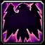
Shadow FocusShadowrow 2 → 1 (earlier: level 10+)
 Improved Mind BlastShadow
Improved Mind BlastShadowrow 3 → 2 (earlier: level 15+)
 Shadow ReachShadow
Shadow ReachShadow3 → 2 ranks · row 4 → 2 (earlier: level 15+)
 Vampiric EmbraceShadow
Vampiric EmbraceShadowrow 5 → 4 (earlier: level 25+)
 Shadow WeavingShadow
Shadow WeavingShadow5 → 3 ranks
Classic talents not in Forever 10
- Unbreakable Will Discipline
- Improved Power Word: Fortitude Discipline
- Divine Spirit Discipline
- Force of Will Discipline
- Healing Focus Holy
- Improved Prayer of Healing Holy
- Lightwell Holy
- Shadow Affinity Shadow
- Improved Fade Shadow
- Improved Vampiric Embrace Shadow
Shaman
16 new · 15 changed · 12 gone
New in Forever 16
- Elemental AlacrityElemental · row 2 · 3 ranks
Lightning Bolt and Chain Lightning cast 0.5 sec faster.
 Trial by FireElemental · row 4 · 2 ranks
Trial by FireElemental · row 4 · 2 ranksFire Nova deals 20% more damage with 4 sec less cooldown, and Magma Totem lasts 20 sec longer.
 EarthboundElemental · row 4 · 1 rank
EarthboundElemental · row 4 · 1 rankEarthbind Totem roots nearby enemies for 5 sec when you drop it.
 Elemental ReachElemental · row 5 · 2 ranks
Elemental ReachElemental · row 5 · 2 ranksLightning Bolt, Chain Lightning and Fire Nova get +6 yd range.
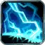
Lightning OverloadElemental · row 5 · 3 ranksLightning Bolt and Chain Lightning have a 30% chance to fire a second copy at the same target for half damage, free and with no threat.
- Mental DexterityEnhancement · row 2 · 3 ranks
Gain Attack Power equal to 100% of your Intellect.
 Shamanistic FocusEnhancement · row 3 · 1 rank
Shamanistic FocusEnhancement · row 3 · 1 rankShocks and Lightning Shield cost 45% less mana.
- Spirit WeaponsEnhancement · row 5 · 1 rank
Lets you parry. 30% less threat while Rockbiter Weapon is not active, 30% more while it is.
 Mental QuicknessEnhancement · row 5 · 2 ranks
Mental QuicknessEnhancement · row 5 · 2 ranksGain spell damage and healing equal to 30% of your Intellect.
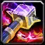
Improved StormstrikeEnhancement · row 5 · 2 ranksStormstrike lets 50% of your mana regeneration continue while casting for 15 sec, and a dodge or parry has a 100% chance to reset its cooldown.
 Maelstrom WeaponEnhancement · row 6 · 5 ranks
Maelstrom WeaponEnhancement · row 6 · 5 ranksMelee hits grant a stack (max 5, 30 sec), on average 10 per minute, adjusted for your main-hand weapon speed. Each stack cuts your next Lightning Bolt's cast time and mana cost by 20%.
 Rage of the FarseerEnhancement · row 7 · 1 rank
Rage of the FarseerEnhancement · row 7 · 1 rank+30% attack speed for 25 sec. 3 min cooldown.
- MindfulnessRestoration · row 2 · 3 ranks
50% of your mana regeneration continues while casting.
 Natural GraceRestoration · row 2 · 3 ranks
Natural GraceRestoration · row 2 · 3 ranksYour spells cause 15% less threat.
 Water ShieldRestoration · row 3 · 1 rank
Water ShieldRestoration · row 3 · 1 rank3 water globes for 10 min: being hit or landing a spell crit uses a globe (at most one every few seconds) to restore 2% of your maximum mana.
- RiptideRestoration · row 7 · 1 rank
Heals the target for 445 over 15 sec, and Chain Heal on that target is 25% stronger. 150 mana, 40 yd, 12 sec cooldown.
Changed place or ranks 15
 Elemental DevastationElemental
Elemental DevastationElementalrow 4 → 2 (earlier: level 15+)
 ReverberationElemental
ReverberationElementalrow 3 → 2 (earlier: level 15+)
 Elemental WardingElemental
Elemental WardingElementalrow 2 → 3 (later: level 20+)
- Call of ThunderElemental
5 → 1 rank · row 3 → 5 (later: level 30+)
 Elemental FuryElemental
Elemental FuryElemental1 → 5 ranks · row 5 → 6 (later: level 35+)
- Lightning MasteryElemental
5 → 1 rank · row 6 → 7 (later: level 40+)
 Earth's GraspEnhancement
Earth's GraspEnhancementmoved from Elemental to Enhancement · row 2 → 1 (earlier: level 10+)
 Thundering StrikesEnhancement
Thundering StrikesEnhancementrow 2 → 1 (earlier: level 10+)
 Elemental WeaponsEnhancement
Elemental WeaponsEnhancementrow 5 → 3 (earlier: level 20+)
- AnticipationEnhancement
5 → 3 ranks
 StormstrikeEnhancement
StormstrikeEnhancementrow 7 → 4 (earlier: level 25+)
- Improved Ghost WolfEnhancement
row 2 → 4 (later: level 25+)
 Ancestral HealingRestoration
Ancestral HealingRestorationrow 2 → 3 (later: level 20+)
 Healing FocusRestoration
Healing FocusRestoration5 → 3 ranks
- Mana Tide TotemRestoration
row 7 → 4 (earlier: level 25+)
Classic talents not in Forever 12
- Improved Fire Totems Elemental
- Storm Reach Elemental
- Elemental Mastery Elemental
- Shield Specialization Enhancement
- Enhancing Totems Enhancement
- Two-Handed Axes and Maces Enhancement
- Improved Weapon Totems Enhancement
- Parry Enhancement
- Weapon Mastery Enhancement
- Nature's Guidance Restoration
- Totemic Mastery Restoration
- Healing Grace Restoration
Mage
13 new · 12 changed · 9 gone
New in Forever 13
 Improved ChannelingArcane · row 1 · 5 ranks
Improved ChannelingArcane · row 1 · 5 ranksTaking damage has a 100% chance not to cut Arcane Missiles short, and a 70% chance not to delay Arcane Blast or Arcane Wrath.
- Missile BarrageArcane · row 2 · 2 ranks
Arcane Blast (40%) and Arcane Wrath, Fireball, Frostbolt and Frostfire Bolt (20%) can make your next Arcane Missiles free, with a 50% shorter channel and a missile every 0.5 sec. It is used up as soon as Arcane Missiles starts, and Clearcasting isn't spent on Arcane Missiles while it is active.
 Arcane GeometryArcane · row 3 · 2 ranks
Arcane GeometryArcane · row 3 · 2 ranksArcane spells get +6 yd range.
 Arcane ImpactArcane · row 3 · 3 ranks
Arcane ImpactArcane · row 3 · 3 ranks+6% critical strike chance with Arcane spells.
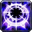
Arcane BlastArcane · row 3 · 1 rank1.5 sec cast: 34–38 Arcane damage. Each cast gives you 12% of your Intellect as spell damage and raises Arcane Blast's mana cost by 100%, stacking 4 times for 18 sec. 15% of base mana, 30 yd.
- Arcane ShieldingArcane · row 4 · 2 ranks
Mana Shield drains 33% less mana per point of damage, and Mage Armor's resistance bonus is 50% higher.
 Arcane WrathArcane · row 4 · 1 rank
Arcane WrathArcane · row 4 · 1 rank3.5 sec cast: 122–146 Arcane damage, plus spell damage equal to 5% of your maximum mana. 140 mana, 30 yd, 6 sec cooldown.
 IncinerationFire · row 1 · 5 ranks
IncinerationFire · row 1 · 5 ranksFire Blast, Ice Lance, Arcane Blast and Scorch get +10% critical strike chance.
 AccelerantFire · row 1 · 5 ranks
AccelerantFire · row 1 · 5 ranksFireball, Frostfire Bolt and Arcane Wrath cast 0.5 sec faster.
- Heating UpFire · row 4 · 1 rank
Direct crits from Fireball, Frostfire Bolt, Fire Blast and Scorch make your next Pyroblast within 20 sec cast 25% faster, stacking 3 times; Fire Blast adds an extra stack whenever it deals damage.
- PrecisionFrost · row 1 · 3 ranks
+6% hit chance with all spells.
 Ice LanceFrost · row 3 · 1 rank
Ice LanceFrost · row 3 · 1 rankInstant: 28–32 Frost damage, 300% more against Frozen targets. 45 mana, 30 yd, 8 sec cooldown shared with Fire Blast.
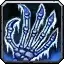
Fingers of FrostFrost · row 5 · 2 ranksYour Chill effects have a 15% chance to treat your next 2 spells (1 at rank 1) as if the target were Frozen. Lasts 15 sec.
Changed place or ranks 12
 Wand SpecializationArcane
Wand SpecializationArcanerow 2 → 1 (earlier: level 10+)
- Arcane ResilienceArcane
1 → 3 ranks · row 3 → 1 (earlier: level 10+)
 Arcane SubtletyArcane
Arcane SubtletyArcanerow 1 → 2 (later: level 15+)
 Magic AbsorptionArcane
Magic AbsorptionArcane5 → 2 ranks
- ImpactFire
5 → 3 ranks · row 1 → 2 (later: level 15+)
 Burning SoulFire
Burning SoulFire2 → 3 ranks
 Improved Fire BlastFire
Improved Fire BlastFire3 → 2 ranks · row 2 → 3 (later: level 20+)
 Fire PowerFire
Fire PowerFire5 → 3 ranks
 Frost ChannelingFrost
Frost ChannelingFrostrow 4 → 3 (earlier: level 20+)
 Ice BlockFrost
Ice BlockFrostrow 5 → 4 (earlier: level 25+)
 ShatterFrost
ShatterFrost5 → 3 ranks
 Cold SnapFrost
Cold SnapFrostrow 3 → 5 (later: level 30+)
Classic talents not in Forever 9
- Arcane Focus Arcane
- Improved Arcane Missiles Arcane
- Magic Attunement Arcane
- Improved Arcane Explosion Arcane
- Improved Mana Shield Arcane
- Improved Fireball Fire
- Incinerate Fire
- Elemental Precision Frost
- Piercing Ice Frost
Warlock
21 new · 16 changed · 19 gone
New in Forever 21
- Soul HarvestAffliction · row 2 · 2 ranks
After you kill a target that has your Drain Soul on it, mana regeneration is 100% higher for 10 sec and 100% of it continues while casting.
 Improved DrainsAffliction · row 2 · 3 ranks
Improved DrainsAffliction · row 2 · 3 ranksDrain Life, Drain Soul and Drain Mana deal or drain more (7 / 13 / 20%).
 Improved Bane of AgonyAffliction · row 3 · 2 ranks
Improved Bane of AgonyAffliction · row 3 · 2 ranksBane of Agony deals 10% more damage.
 PandemicAffliction · row 3 · 3 ranks
PandemicAffliction · row 3 · 3 ranksCritical hits from Corruption, Bane of Agony, Bane of Doom, Drain Soul, Drain Life, Siphon Life and Wrack deal 100% more bonus damage.
 MalevolenceAffliction · row 4 · 5 ranks
MalevolenceAffliction · row 4 · 5 ranks+5% critical effect chance with Shadow spells.
 Soul SiphonAffliction · row 5 · 3 ranks
Soul SiphonAffliction · row 5 · 3 ranksDrain Life, Drain Soul and Wrack deal or drain 12% more for each of your Corruption, Siphon Life and Bane of Agony on the target, +36%.
- WrackAffliction · row 7 · 1 rank
Channel for 6 sec: about 60 Shadow damage every second at level 60, with strong spell-power scaling. While you channel, your Corruption, Siphon Life and Bane of Agony on the target deal their damage 100% faster (same duration; time skipped is kept if the channel ends early). Not boosted by Improved Drains. 200 mana, 30 yd.
 Demonic AegisDemonology · row 2 · 2 ranks
Demonic AegisDemonology · row 2 · 2 ranksDemon Skin and Demon Armor are 30% stronger.
 Fel VitalityDemonology · row 2 · 3 ranks
Fel VitalityDemonology · row 2 · 3 ranksYour demons get 15% more health and mana, and your maximum mana is 15% higher.
 Demonic EnergiesDemonology · row 2 · 2 ranks
Demonic EnergiesDemonology · row 2 · 2 ranksYour spell damage heals your demon for 15% of the damage, and Life Tap gives your demon 100% of the mana you gain.
 DecimationDemonology · row 4 · 2 ranks
DecimationDemonology · row 4 · 2 ranksSoul Fire cooldown 90% shorter. Shadow Bolt and Searing Pain deal 6% more to targets under 35% health and, for 10 sec, make Soul Fire 40% faster and free of Soul Shards.
 Demonic BrandDemonology · row 4 · 3 ranks
Demonic BrandDemonology · row 4 · 3 ranksSearing Pain causes 50% less threat and brands the target for 10 sec: your demon's next 6 attacks add 65–68 Fire or Shadow damage plus 7.8% of your higher Fire or Shadow spell power. The Shadow version causes high threat.
 Improved FelhunterDemonology · row 5 · 3 ranks
Improved FelhunterDemonology · row 5 · 3 ranksThe Felhunter's Tainted Blood, Devour Magic heal and Paranoia are 30% stronger, and Spell Lock's cooldown is 6 sec shorter.
- Demonic KnowledgeDemonology · row 5 · 3 ranks
While your demon is out, you and it gain spell damage equal to 100% of your level.
- Demonic PactDemonology · row 7 · 1 rank
Summoning a different demon doesn't cancel Demonic Sacrifice (summoning the sacrificed demon type still does).
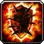
Molten SkinDestruction · row 2 · 5 ranksAll damage you take is 10% lower.
 Agonizing FlamesDestruction · row 4 · 3 ranks
Agonizing FlamesDestruction · row 4 · 3 ranksSearing Pain gets +10% crit chance and all Destruction damage is 10% higher.
- Bane of HavocDestruction · row 5 · 1 rank
Banes one target for 5 min: 15% of the damage you deal to other targets is also dealt to it. One target at a time. 5% of base mana, instant.
 Fire and BrimstoneDestruction · row 5 · 3 ranks
Fire and BrimstoneDestruction · row 5 · 3 ranksConflagrate gets +25% crit chance.
 Shadow and FlameDestruction · row 6 · 5 ranks
Shadow and FlameDestruction · row 6 · 5 ranksConflagrate gives +20% Shadow damage and Shadowburn +20% Fire damage for 20 sec; Conflagrate has a 100% chance not to consume Immolate and Shadowburn a 100% chance to refund its Soul Shard.
- IncinerateDestruction · row 7 · 1 rank
2.5 sec cast: 100–114 Fire damage, 25% more if the target has your Immolate. 205 mana, 30 yd.
Changed place or ranks 16
 Improved Life TapAffliction
Improved Life TapAfflictionrow 2 → 1 (earlier: level 10+)
- Grim ReachAffliction
row 4 → 2 (earlier: level 15+)
- Fel ConcentrationAffliction
5 → 3 ranks
 Curse of ExhaustionAffliction
Curse of ExhaustionAfflictionrow 5 → 4 (earlier: level 25+)
 Improved Health FunnelDemonology
Improved Health FunnelDemonologyrow 2 → 1 (earlier: level 10+)
- Unholy PowerDemonology
row 4 → 1 (earlier: level 10+)
 Demonic SacrificeDemonology
Demonic SacrificeDemonologyrow 5 → 3 (earlier: level 20+)
- Master SummonerDemonology
row 4 → 3 (earlier: level 20+)
- Fel DominationDemonology
row 3 → 4 (later: level 25+)
 Soul LinkDemonology
Soul LinkDemonologyrow 7 → 5 (earlier: level 30+)
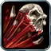
Destructive ReachDestructionrow 4 → 1 (earlier: level 10+)
 BaneDestruction
BaneDestructionrow 2 → 1 (earlier: level 10+)
 CataclysmDestruction
CataclysmDestruction5 → 3 ranks · row 1 → 2 (later: level 15+)
- RuinDestruction
1 → 5 ranks · row 5 → 3 (earlier: level 20+)
 IntensityDestruction
IntensityDestruction2 → 3 ranks
- ConflagrateDestruction
row 7 → 4 (earlier: level 25+)
Classic talents not in Forever 19
- Improved Curse of Weakness Affliction
- Improved Drain Soul Affliction
- Improved Drain Life Affliction
- Improved Curse of Agony Affliction
- Improved Drain Mana Affliction
- Improved Curse of Exhaustion Affliction
- Dark Pact Affliction
- Improved Healthstone Demonology
- Fel Intellect Demonology
- Fel Stamina Demonology
- Improved Subjugate Demon Demonology
- Improved Firestone Demonology
- Improved Spellstone Demonology
- Improved Firebolt Destruction
- Improved Lash of Pain Destruction
- Devastation Destruction
- Improved Searing Pain Destruction
- Improved Immolate Destruction
- Emberstorm Destruction
Druid
18 new · 18 changed · 13 gone
New in Forever 18
- GenesisBalance · row 1 · 5 ranks
Your periodic damage and healing are 10% stronger.
 Nature's MajestyBalance · row 2 · 2 ranks
Nature's MajestyBalance · row 2 · 2 ranks+4% critical strike chance with spells and melee attacks.
- Nature's SplendorBalance · row 3 · 1 rank
Moonfire and Rejuvenation last 3 sec longer, Regrowth 6 sec and Insect Swarm 2 sec.
 OvergrowthBalance · row 5 · 2 ranks
OvergrowthBalance · row 5 · 2 ranksEntangling Roots hits up to 2 more targets.
 EclipseBalance · row 5 · 3 ranks
EclipseBalance · row 5 · 3 ranksWrath makes your next 2 Starfires cast 0.5 sec faster (up to 4 charges, 15 sec).
- Feral SwiftnessFeral Combat · row 2 · 2 ranks
30% faster in Cat Form and +4% dodge.
- Shredding AttacksFeral Combat · row 3 · 3 ranks
Shred costs 18 less Energy and Lacerate 3 less Rage.
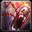
LacerateFeral Combat · row 4 · 1 rankBear or Dire Bear Form: a bleed for 20 damage over 15 sec plus 10% weapon damage per existing application, stacking 5 times, with high threat. 15 Rage. Higher spell ranks at levels 34, 42, 50 and 58.
- Predatory DisciplineFeral Combat · row 4 · 1 rank
Ferocious Bite doesn't spend your extra Energy, but still deals extra damage based on it.
 Natural InstinctFeral Combat · row 5 · 2 ranks
Natural InstinctFeral Combat · row 5 · 2 ranksMelee crits deal 20% more bonus damage, and you gain healing equal to 25% of your Intellect.
 Rend and TearFeral Combat · row 6 · 5 ranks
Rend and TearFeral Combat · row 6 · 5 ranksYou deal 15% more damage to bleeding targets.
 Natural ReactionFeral Combat · row 6 · 5 ranks
Natural ReactionFeral Combat · row 6 · 5 ranks+5% dodge, and a 100% chance to gain 5 Rage each time you dodge.
- Primal BiteFeral Combat · row 7 · 1 rank
Bear or Dire Bear Form: bite for 100% weapon damage plus 42 (62 and 77 at higher spell ranks) with high threat. 20 Rage, 6 sec cooldown.
- Shifting PowerFeral Combat · row 7 · 1 rank
Cat Form, instant: turn 55% of your base mana into 40 Energy. Effects that lower shapeshift costs also lower this cost. 8 sec cooldown.
 NaturalistRestoration · row 2 · 5 ranks
NaturalistRestoration · row 2 · 5 ranksHealing Touch and Wild Growth cast 0.5 sec faster, and all your damage is 10% higher.
- BloomRestoration · row 3 · 1 rank
When your Rejuvenation or Regrowth runs its full duration, the target is healed for 100% of your Spirit (50% if the effect is dispelled).
- Living SpiritRestoration · row 5 · 3 ranks
15% more Spirit.
- Wild GrowthRestoration · row 7 · 1 rank
3 sec cast: heals the target and its party members within 43.5 yd of it for 336 over 7 sec, fast at first and slower later. 550 mana, 40 yd, 6 sec cooldown.
Changed place or ranks 18
 MoonglowBalance
MoonglowBalancerow 5 → 2 (earlier: level 15+)
- Improved MoonfireBalance
5 → 2 ranks
- Nature's ReachBalance
row 3 → 2 (earlier: level 15+)
 Improved Entangling RootsBalance
Improved Entangling RootsBalancerow 2 → 3 (later: level 20+)
- Insect SwarmBalance
moved from Restoration to Balance · row 3 → 4 (later: level 25+)
 FurorFeral Combat
FurorFeral Combatmoved from Restoration to Feral Combat
- Feral InstinctFeral Combat
5 → 3 ranks
- Thick HideFeral Combat
5 → 3 ranks
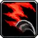
Savage FuryFeral Combatrow 5 → 3 (earlier: level 20+)
 Sharpened ClawsFeral Combat
Sharpened ClawsFeral Combat3 → 2 ranks
- Leader of the PackFeral Combat
row 7 → 5 (earlier: level 30+)
 Nature's FocusRestoration
Nature's FocusRestorationrow 2 → 1 (earlier: level 10+)
 Heart of the WildRestoration
Heart of the WildRestorationmoved from Feral Combat to Restoration · row 6 → 1 (earlier: level 10+)
 ReflectionRestoration
ReflectionRestorationrow 3 → 2 (earlier: level 15+)
 Natural ShapeshifterRestoration
Natural ShapeshifterRestorationmoved from Balance to Restoration
 SubtletyRestoration
SubtletyRestoration5 → 3 ranks
 Gift of NatureRestoration
Gift of NatureRestorationrow 5 → 3 (earlier: level 20+)
- SwiftmendRestoration
row 7 → 4 (earlier: level 25+)
Classic talents not in Forever 13
- Nature's Grasp Balance
- Improved Nature's Grasp Balance
- Natural Weapons Balance
- Improved Thorns Balance
- Omen of Clarity Balance
- Feral Aggression Feral Combat
- Feline Swiftness Feral Combat
- Improved Shred Feral Combat
- Primal Fury Feral Combat
- Faerie Fire (Feral) Feral Combat
- Improved Mark of the Wild Restoration
- Improved Healing Touch Restoration
- Improved Enrage Restoration
This page compares tree layout only – names, ranks, rows and trees. Many kept talents also have different numbers in Forever; the calculator always shows the live values. A talent counts as kept when its name is the same in both games, so a renamed talent shows up as one gone and one new. Classic layout data: wowsims (MIT licence).